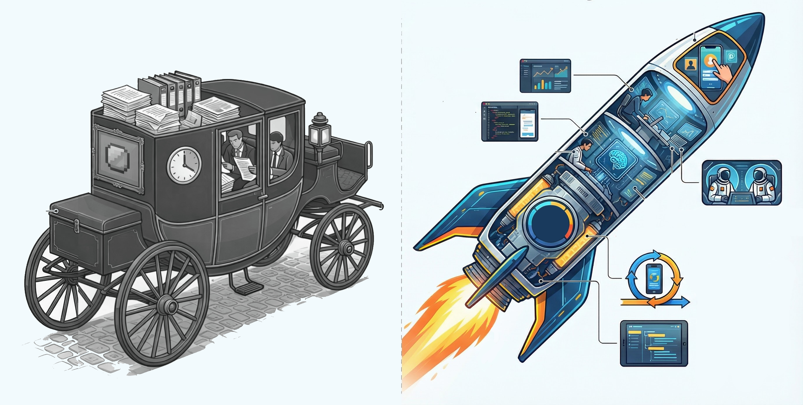
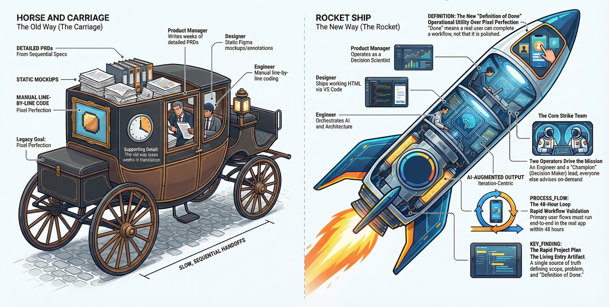

Pod Execution Model
How pods ship working software as fast as possible

Pods Eliminate the Translation
Layers That Slow Delivery
The New Paradigm
Iterate first. Spec later.
Roles collapse. Handoffs disappear.
AI fills the operational gaps that previously required headcount.
Every Delivery Cycle Strengthens
the Next Iteration
Execution becomes predictable when learning never stops.
Two Operators Drive Each Pod
Everyone Else Advises
Execution cores, not committees. Built for speed and decisive action.
Engineer and Champion drive the pod. Everyone else advises.
AI is the force multiplier. Every person commands unprecedented leverage.
AI Collapses Roles, Replacing
Sequential Handoffs with
Shared Iteration
From passing documents over weeks
to iterating in code over hours.
The Old Way: Silos
The New Way: Iteration
Context Synthesis Replaces
Multi-Week Spec Cycles
What used to require heavy manual synthesis
now takes a morning with AI.
Gather Context
Draft Documentation
Define Done
Designers Ship Working UI in
Hours, Not Weeks
A designer with VS Code can produce a
clickable artifact in a single session.
Shape the Brief
Build in Code
Iterate Live
Engineers Orchestrate AI,
Not Write Every Line
Engineers direct, integrate, and ensure quality
while AI handles the heavy lifting.
Scaffold the App
Ship and Iterate
Own Architecture
QA Is Consultative, Not Gating.
Stakeholders Clear the Path.
QA advises and automation covers the baseline.
Stakeholders remove friction, not approve output.
QA Advisory
Automated Coverage
Stakeholder Alignment
Every Artifact Must Accelerate
Testing or Iteration
The artifact is the iteration. Everything else
is a note to make the iteration better.
What Pods Don't Produce
What Pods Produce
[ Mandatory Protocol ]
The RPP Is the Required Entry
Point Before Any Pod Ships
Seven fields. One page.
The foundation every pod builds against.
RPP in the Wild:
The Miami Dade Fast Track
A real execution plan stripped of the noise.
Focus entirely on reality and constraints.
The underlying artifact.
Stabilize File Manager performance for large folder structures by migrating folder permissions to the new domain permission model, then deliver bulk permission management to eliminate folder-by-folder edits.
Success = large projects load without degradation, admins modify permissions across thousands of folders efficiently.
- Backend Architecture: Migrate to new domain permission model
- Performance Stabilization: Eliminate deep folder permission crawl
- UI Enhancement: Bulk permission management workflow
- Deep folder trees degrade performance
- Thousands of folders per project
- API workarounds do not scale
- Manual edits per folder required
- Miami Dade: ~4000 folders, ~75 groups
- Current UI not viable at enterprise scale
Ensure File Manager supports enterprise-scale folder structures without performance degradation while enabling efficient bulk permission management.
- Replace folder permission logic with new domain model
- Align folder architecture with partition-level permissions
- Validate performance on large data sets
Out of scope: usability enhancements before performance stabilization
- Introduce bulk permission editing workflow
- Enable cross-folder updates in a single action
- Ensure solution benefits all customers, not just Miami Dade
- Adopt onboarding rewrite permission model for folders
- Avoid API-based mass permission mutation
- Performance validation before UI improvements begin
- Euro engineering team owns implementation
- Euro team is resource constrained
- Performance must be solved before usability
- High-visibility customers involved
- No external engineering support for Euro team
Phase 2: Design bulk permission UX · Implement efficient update workflow · Test across Miami Dade and GSA
Phase 3: Generalize rollout across enterprise · Monitor performance and feedback
- Engineering Architecture: Colin
- Implementation: Vlad and Euro Team
- API Context: Mike Richie
- Customer Success: Kimberly Day
- Partner Enablement: John Quigley
Shared Vocabulary:
Eliminating Misalignment
Consistent terms prevent drift.
Every pod behaves the exact same way.
Continuous Progress
Beats Delayed Polish
Speed doesn't come from working harder.
It comes from closing the feedback loop instantly.
Done Means Operational.
Not Polished.
What "Done" Means
What It Does Not Mean
Teams no longer operate around a PRD. They operate around an Iteration.
kCapture Proves the Model
From an abstract concept to a shipping product
without a single traditional handoff.
Already Shipped
What It Proves

Canvas Validated the
Execution Model
The pilot pod. Canvas shipped as a full product using the execution framework before we even formalized it.
What It Proved
One execution model.
Three proving grounds.
Calendar Pod
Strategic Pod
Forward Pod
Calendar pod is the pilot.
Model expands post-May.
Six Concrete Behavior Shifts
These are not aspirational. These start now.
Pod Execution System
Engineer & Champion
Are Constant. All Others Flex.
No downstream handoffs. The entire pod is active in every phase. Highlighted cells indicate execution drivers, while faint cells represent active cross-functional support.
Single-Customer Insights Become
Platform Capabilities.
Pods execute highly specific, local workflows. When local patterns overlap across multiple pods, that validated insight graduates back into the core platform for everyone.
Local R&D
A single Pod rapidly builds, tests, and validates a hyper-specific workflow directly with one real customer.
Market Signal
Multiple pods independently detect the exact same workflow pattern and need emerging across different customers.
Platform Scale
The proven workflow is extracted, standardized, and permanently deployed as a core Kahua platform capability.
Spec Author
Decision Scientist
The PM's absolute value is judgment and velocity. Dictate the flow, synthesize the context, and rely on real validation instead of static specifications.
Live Iteration
Define problem frames entirely inside working UI models on day one.
Instant Synthesis
Pipe all customer signals directly into Canvas to synthesize architecture immediately.
Real Validation
Force users to interact with live workflows instead of reviewing static ideas.
Pixel Pusher
Creative Director
Design accelerates iteration instead of preceding it. You direct output logic and shape fully interactive features, eradicating static files entirely.
Live Prototyping
Open the codebase directly and command AI to scaffold interactive UI.
Output Curation
Direct the generated logic flow instead of manually aligning pixels.
Native Handoff
Abandon Figma links and ship functional logic natively alongside engineers.
Manual Coder
AI Orchestrator
The engineer's value is system orchestration and supreme judgment, not physical keystrokes.
Deep Scaffolding
Generate the core architectural infrastructure instantly using massive context prompts.
Total Ownership
Assume immediate control of environments, component architecture, and CI integrations.
Rapid Velocity
Deliver end-to-end, functional user flows in staging within a 48 hour span.
Gatekeeper
Embedded Partner
Validation is continuous and automated natively. There is no concept of an adversarial "handoff to QA" at the finish line.
Day One Entry
Merge into the iteration cycle at phase zero to establish safety bumpers.
Multi-Agent Scenarios
Orchestrate autonomous AI agents capable of relentlessly blitzing edge cases.
Velocity Enablement
The core objective shifts from artificially blocking builds to massively accelerating deployment.

Current Draft
March 29, 2026